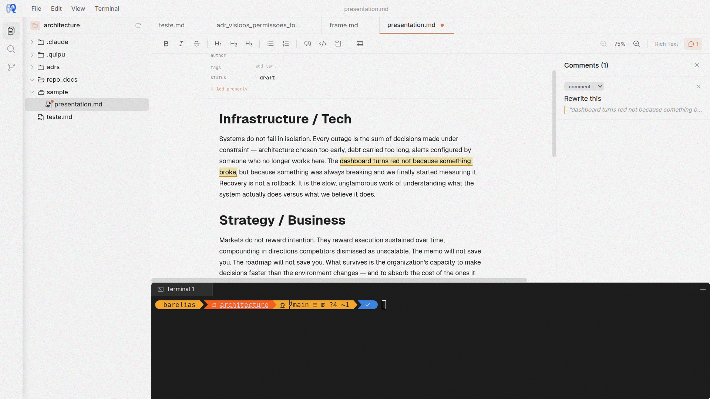

A knowledge workspace for humans and AI agents. Write in markdown, annotate with FRAME, and give your AI tools persistent context that travels with your files.

Quipu blends the power of a code editor with the expressiveness of a rich text notebook. AI tools get persistent context. You get a workspace where knowledge accumulates.
Built on TipTap v3. Headings, lists, code blocks, tables, and inline formatting with full markdown round-trip. Write .md files with a real editor.
A real terminal powered by xterm.js and node-pty. Run builds, tests, git commands, or launch Claude right from the editor.
Highlight any text and attach a comment. Comments render as warm highlights that expand on hover. Great for review, annotation, and thinking out loud.
Ctrl+P for quick file open. Ctrl+Shift+P for commands. Navigate your entire workspace without touching the mouse.
Markdown files with frontmatter get a visual property editor. Add tags, dates, and custom metadata without writing raw YAML.
FRAME gives every file its own AI envelope: annotations, instructions, and conversation history that agents read without ever touching your source. Knowledge that accumulates instead of disappearing into chat.
Run as an Electron desktop app with full system access, or in the browser backed by a Go server. Same UI, same features, your choice.
Quipu saves .md files as markdown and .quipu files as structured JSON. The editor understands both. Switch between rich formatting and raw text without losing fidelity.
# Meeting Notes
Action items from today:
- [x] Review PR #42
- [ ] Update docs
- [ ] Deploy to staging
Every file in your workspace can carry an invisible layer of context. FRAME is Quipu's per-file metadata system — annotations, instructions, and conversation history that travel with your files without touching them.
/frame
Highlight any line and leave a comment. Annotations are anchored to specific lines in your code or prose — review notes, TODOs, questions, all visible inline without cluttering the source file.
Each file can carry its own instructions — persistent context that tells AI tools how this file should be treated. Think of it as a per-file README that only your tools see.
Every AI interaction on a file is logged — what you asked, what changed, and when. Scroll back through the conversation history to understand how a file evolved, or pick up where you left off.
.quipu/meta/, never inside your source files.
Your code stays clean. Gitignore the folder or commit it — your choice.
Light for bright rooms. Tinted for warm, focused writing. Dark for late nights. Cycle through them with a single keystroke.
Quipu is free and open source. Download the desktop app or run it in your browser.